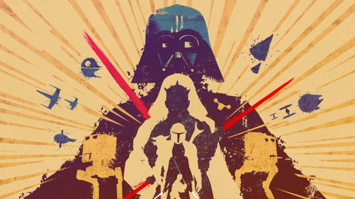
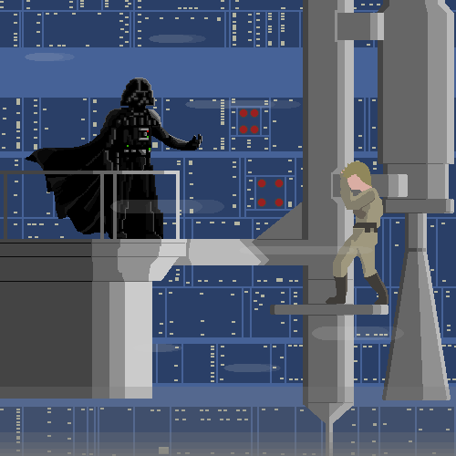

Desde “American Graffiti” (1973), y sus primeras incursiones en el cine, George Lucas tuvo la
idea de hacer
una película basada en el comic “Flash Gordon”. La cuestión financiera fue un problema ya que no pudo
hacerse con los derechos de la obra creada por Alex Raymond. Una vez desechada esa posibilidad, Lucas quiso
ir más allá, crear su propia fantasía espacial con planteos nuevos y originales, algo como nunca antes se
había visto.

Corría el año 1973 cuando Lucas comenzó a escribir el primer borrador de "Star Wars".
Estaba fuertemente
influenciado por "La fortaleza escondida" (1958) de Akira Kurosawa. Entre los varios conceptos que
giraban
en su cabeza, Lucas veía a un malvado señor medieval con un casco negro y sables cuyas hojas fuesen de
luz
en lugar de metal. Incluso pensaba que el malvado señor medieval del casco negro debía cambiar de bando
al
final de la historia, como ocurría en otra película de Kurosawa.
Ya en esos primeros borradores surgieron nombres fundamentales para la historia: Luke
Skywalker (de
apellido
Starkiller en el primer borrador), la Princesa Leia, Han Solo (inicialmente un mercenario con branquias
y
piel verde), Chewbacca, C-3PO, R2-D2, Darth Vader, y Obi-Wan Kenobi.
Luego de varias reescrituras donde incorporaron elementos nuevos como los señores oscuros "Sith" y la
"Estrella de la Muerte" el guion seguía sin encontrar un estudio que lo financie. United Artists lo
rechazó
más de una vez, Disney dijo que era muy cara (ironías del destino). Lucas estaba a punto de resignarse
cuando un joven ejecutivo de la 20th Century Fox llamado Alan Ladd Jr concertó una reunión con él.
Aunque
Ladd no comprendía muy bien la historia, quedó lo suficientemente impresionado como para acabar firmando
un
acuerdo que sin dudas redefiniría la industria del cine por completo.
Lucas se aseguró el control total sobre su producto, a cambio, aceptó unas condiciones económicas
bastante
limitadas: recibió u$s50.000 por el guion y un salario total de u$s100.000 como realizador. El detalle
fundamental del acuerdo estaba en la letra chica, el director se quedaría con los derechos derivados de
la
obra, una "pequeña cantidad", resultante de la venta de merchandising.

Lucas disponía de un presupuesto inicial de u$s3 millones, adelantados por la Fox. Aunque
intentó
optimizar
su presupuesto la cinta acabaría costando u$s10 millones.
A la hora de seleccionar el elenco hubo muchos actores considerados, nombres de la talla de Kurt
Russell,
William Katt, Amy Arving, Burt Reynolds, Nick Nolte y Jodie Foster entre otros. Sin embargo, el trio
protagónico quedaría conformado por un joven en ascenso Harrison Ford, y los hasta entonces desconocidos
Mark Hamill y Carrie Fisher como Han Solo, Luke y la Princesa Leia.
Mientras preparaba el rodaje, George Lucas comprobó que la 20th Century Fox, ya no disponía de un
departamento de efectos visuales. Empeñado en conseguir que "Star Wars" estuviera a la altura de lo que
tenia en mente, Lucas fundó Industrial Light & Magic en mayo de 1975.
La cinta comenzó a rodarse el 22 de marzo de 1976 en el desierto de Túnez, desde su inicio la producción
del
filme se enfrentó a varios problemas: el retraso de las filmaciones debido a una intensa tormenta, el
mal
funcionamiento de la utilería y además algunas averías electrónicas, entre otras cuestiones.
El rodaje de los interiores en los estudios Elstree de Londres no resultó mejor, Lucas nunca logró
llevarse
bien con los integrantes del equipo de filmación. A ello hay que sumar la complejidad de grabar en
algunos
escenarios, por ejemplo, la escena en el triturador de basura de la "Estrella de la Muerte". Rodeados de
agua estancada y desperdicios, Carrie Fisher, Harrison Ford, Mark Hamill y Peter Mayhew (Chewbacca)
tuvieron
que soportar malos olores, la incomodidad de sus vestuarios y más de un accidente.
La película creció mucho en la posproducción, Lucas contrató a James Earl Jones para que le diera
gravedad a
la voz de Darth Vader, ya que no le convencía la entonación de David Prowse, el actor bajo el mítico
traje.
La Industrial Light & Magic se lució a la hora de crear las maquetas de las naves espaciales. Los
técnicos
adquirieron numerosas maquetas de aeromodelismo, y las fueron ensamblando hasta completar los diseños
que
hoy son ya legendarios.
Es imposible hablar de "Star Wars" y no destacar el trabajo del compositor John Williams, autor de la
magistral banda sonora del film, y el de aporte de Ben Burtt, responsable de los numerosos efectos
sonoros
del filme.